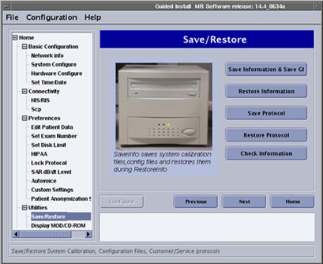

Operating Documentation
Direction 5440000, Rev# 5
Signa HDxt Service Methods
Module Version 1.0, Version Date 4/17/07
Operating Documentation |
| Required Persons | Preliminary Reqs | Procedure | Finalization |
|---|---|---|---|
| 1 | Not Applicable | 10 mins | Not Applicable |
Systems require an Install In Spec (IIS) key to be generated prior to patient scanning. The system requires several calibrations to pass prior to IIS key generation. Some of the calibrations that the system requires are available to proprietary users only. If you are no longer under a GE service contract and re-load your software your system will no longer have an IIS key and therefore will be unable to scan. This procedure outlines the two ways to restore an IIS key to systems no longer under a GE service contract.
| Last Update | 03/09/2006 |
Using Restore Information, return the system to a configuration that contained the IIS key.
| NOTE: | If a Save Information was never performed on a system, its configuration was never captured on a MOD or DVD and you will not be able to use the Restore Information to restore the IIS key. If this is the case with your system see Call Online Help. |
Insert your SaveInfo MOD or DVD into the appropriate drive.
At the host computer, go to the Service Desktop and open the Service Browser. Start the Guided Install tool in FE Mode, (see Illustration 1).
Illustration 1: Starting Guided Install

In Guided Install, go to Save / Restore and click Restore Information, Illustration 2.
Illustration 2: Save/ Restore Window

Often times, if the IIS key is not present in a system, Restore Information is not available. If this is the case, you will not be able to perform any scans on your system until an IIS key is obtained.
Call GE online help.
No finalization steps.